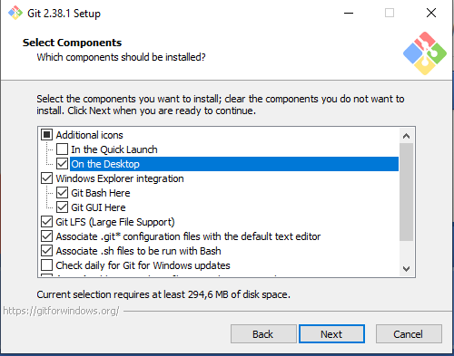
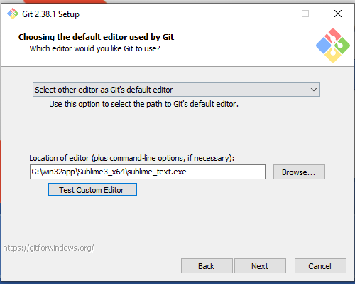
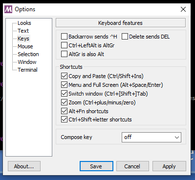
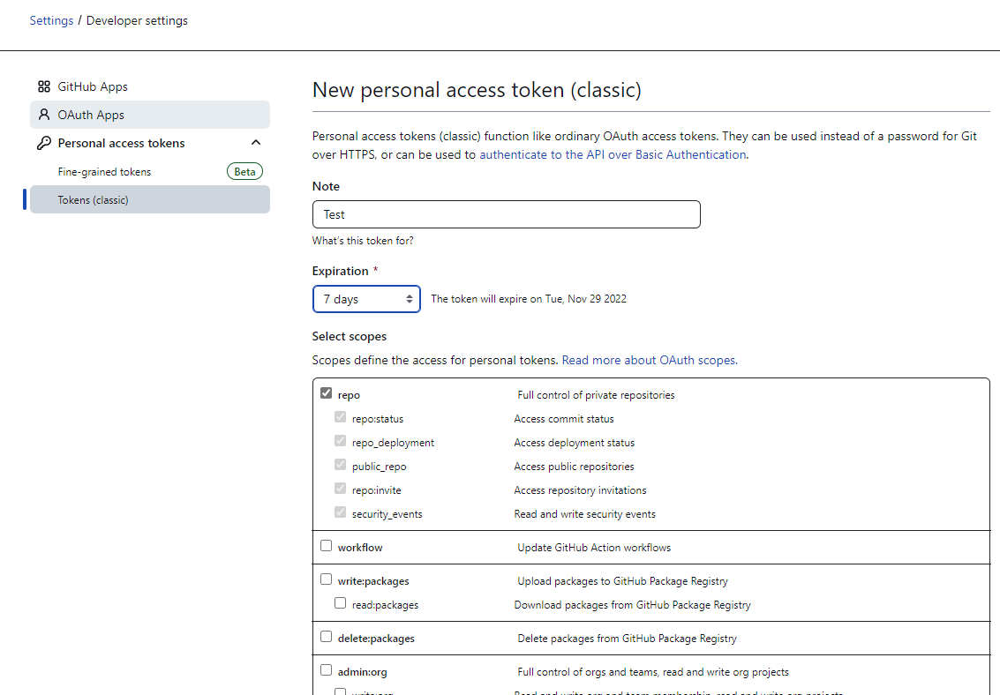

Zatímco Python je programovací jazyk a jediná volnost spočívá v použité verzi, PyCharm je jedno z možných IDE - pokud máte rádi nějaké jiné, můžete pracovat v libovolném IDE chcete - jen vám pak můžeme hůře poradit při případných problémech, ale budeme se snažit...
Python je
Ve škole naleznete interpret/environment (nemusíte nic instalovat, pouze si, až na to dojde, dotáhnete knihovny, které chcete používat)
Python si můžete stáhnout na https://www.python.org/downloads/ a hlavně si pamatujte, kam jste ho uložili - budete ho poté muset najít při vytváření projektu...
PyCharm je IDE (Integrated Devolopment Environment - integrované vývojové prostředí), tedy program, který Vám bude usnadňovat psaní vašich programů.
Mimo jiné vám bude ukazovat kde máte ve vašem programu chybu (bouhužel jen některé chyby...), našeptávat co byste mohli chtít napsat, doplňovat slova, umožní vám hezky zobrazit debugger (odkrokování programu a prohlížení hodnot v jednotlivých proměnných v každém momentu).
Ve škole naleznete PyCharm
PyCharm (Community verzi) si můžete stáhnout na https://www.jetbrains.com/pycharm/download/
Při vytváření projektu volíte "Virtual environment - venv" - to způsobí, že se k vašemu projektu vytvoří "kopie" aplikace Python. To bude mít za následek mimo jiné 2 věci:
Postup:
Nastavovat interpret u projektu můžete v horním menu -> File -> Settings -> (vlevo) Project: [nazev] -> Project interpreter
V políčku "Project interpreter" můžete měnit, případně pomocí Add/+ vedle políčka přidávát/hledat nové interpretry
Knihovny doinstalujete přes "+" v políčku se seznamem již nainstalovaných knihoven -> naleznete knihovnu -> dole "Install package"
Doinstalovat (prohlédnout/odinstalovat/uktualizovat) knihovny můžete také pomocí příkazů v cmd.
V cmd ve složce vašeho venv/Scripts --> python.exe -m pip [knihovna k nainstalovani] <-- viz také použití pip
C je kompilovaný programovací jazyk a NetBeans je IDE, stejně jako u Pythonu a PyCharmu můžete opět pracovat i v libovolném jiném IDE, které máte rádi a dokážete ho ve škole zprovoznit.
C je kompilovaný programovací jazyk, který pro vytvoření spustitelného programu potřebuje kompilátor. Kompilátorů existuje mnoho - ve škole je připraven kompilátor MinGW na G:/win32app/MinGW/bin .
NetBeans je IDE, do kterého lze doinstalovat velké množství doplňků (pluginů) - jedním z nich je i doplněk pro C/C++. ve škole je již starší verze NetBeans 8.2, ale vzhledem k tomu, že se C budeme věnovat pouze okrajově nám bohatě postačí.
V horním menu Tools -> Plugins -> Available plugins -> zaškrtnout C/C++ -> dole Install
Až budete mít vytvořeno více projektů, dejte si pozor, zda je ten, který chcete spouštět označen jako "hlavní" - v přehledy vlevo je tučný -> to je ten, který spouštíte tlačítkem Run.
Jako "hlavní" nastavíte projekt, když na něj kliknete druhým tlačítek a zvolíte "Set as main project".
Git je nástroj pro správu projektu, především jeho verzí, různých vývojových větví, opravu chyb a vytváření nových vychytávek.
Enormní přínos Gitu zaznamenáte hlavně ve chvíli, kdy na projektu spolupracuje více lidí.
Poskytovatelů prostoru pro uložení vašich projektů je mnoho (můžete si klidně spustit svůj vlastní Git server...). Známe jsou např.: https://github.com/ nebo https://about.gitlab.com/ -> na některém si založte účet a vytvořte svůj repozitář (tj. projekt/složka)
Stáhněte Git z https://gitforwindows.org/
Pokud použijete nastavení z obrázků níže, bude se Vám s Gitem snáze pracovat...
 Po instalaci spusťte konzoli Gitu (spustí se linuxová konzole) - existuje i GUI, které lze spustit v konzoli pomocí ( $ git gui ) ale pro nás by bylo ze začátku zbytečně složité.
Klikněte pravým tlačítkem na lištu konzole a v "Options..." zaklikněte v "Keys" ctrl+shift+letter -> tím můžete kopírovat z a do konzole pomocí zkratek ctrl+shift+c a ctrl+shift+v
V konzoli zadejte příkaz ( $ cd H: ), kterým přejdete do vašeho disku H (případně můžete přejít kamokoliv jinam, kde chcete mít svou lokální složku/projekt)
Zadejte ( $ git clone https://...url...vaseho...projektu... ) a dále ( $ cd NazevVasehoProjektu ) -> nyní jste stáhli váš projekt a přemístili se do složky (váš projekt je jednoduše složka v počítači, se všemi soubory, které projekt obsahuje)
Nyní provádějte jakékoliv změny zde ve složce vašeho projektu
Pomocí ( $ git status ) se můžete podívat, co Git o vašich změnách ví
Pomocí ( $ git add --all ) řeknete, že všechny provedené změny chcete zaznamenat (můžete i vybrat jen některé...)
Pomocí ( $ git commit -m "popisek vašeho kousku práce" ) vytvoříte tzv. commit -> balíček práce (tento balíček dostane přiřazeno číslo a můžete se poté v historii vracet k tomuto číslu, vrátit změny provedené v tomto balíčku a pod.)
Pomocí ( $ git push ) nahrajete vytvořené commity na server (zatím se vše odehrávalo pouze u vás lokálně)
Pozn.: Pokud by nastala chyba s přístupovými právy, elegantní možností na GitHubu je vytvoření přístupového tokenu viz návod na tvorbu tokenu - vytvořte "Personal access tokens (classic)", u oprávnění zaškrtnete první skupinu a poté při výzvě k příhlášení překlikněte na přihlášení tokenem a zadejte vytvořený token (případně lze token využít místo hesla (spolu s vaším loginem))
